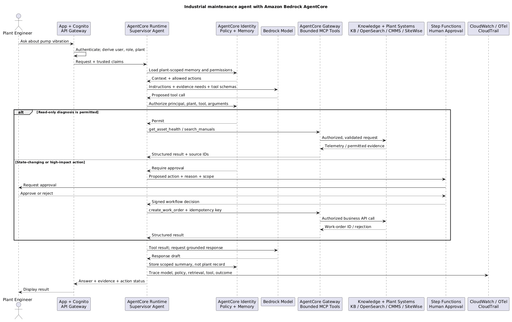

AWS AI Services
Understand what each service does, when to use it, and its request/response shape. Open a card for capability bullets, a payload/workflow example, and relevant tier/capacity choices. AWS links provide setup details and current rates.
Visual guides: Choose an access path · Identity and tokens · RAG chunking · Security and auditing.
Core comparisons: Bedrock tiers · SageMaker hosting / GPU support · Step Functions Standard / Express. Other comparisons stay in the service cards. Swipe wide tables sideways on small screens.
Part 7 of 7: Infrastructure and evaluation → AWS AI Services → certification practice.
1. Model lifecycle
Select → adapt if needed → evaluate → release → monitor
Decision Making
Choose the model platform
| Requirement | Start with |
|---|---|
| Managed model APIs | Amazon Bedrock — Use supported models through a managed runtime. |
| Control GPU, container, or scaling | SageMaker AI — Choose the hosting mode around the workload. |
| Device or local infrastructure | SageMaker Neo, Outposts / Wavelength — Check compilation targets and infrastructure separately. |
Choose the adaptation lever
| Requirement | Start with |
|---|---|
| Instructions or format are unclear | Bedrock Prompt Management, Bedrock Prompt Optimization — Revise the prompt; compare on held-out tasks. |
| Private/current facts are missing | Bedrock Knowledge Bases — Retrieve authorized evidence. |
| Stable behavior needs adaptation | Amazon Bedrock, SageMaker AI — Evaluate supported tuning/distillation after simpler changes. |
Implementation Notes
Bedrock: model APIs and customization
Bedrock supplies managed model APIs. Start with a prompt and authorized evidence; consider supported customization when evaluation shows a stable behavior gap. Customization options.
Bedrock service tiers
| Option | Use / constraint | Cost driver |
|---|---|---|
| Standard (default) | Everyday interactive inference | Model input/output usage |
| Priority | Higher scheduling priority for latency-sensitive requests | Premium usage rates |
| Flex | Lower-priority, delay-tolerant work | Discounted usage rates |
| Reserved | Sustained reserved input/output TPM; overflow uses Standard | Monthly capacity; 1- or 3-month commitment |
Service tiers differ from Provisioned Throughput. Check model/API/Region eligibility; Bedrock manages the GPU infrastructure.
AWS references: Service tier contracts · Bedrock rates.
SageMaker: choose how the model runs
Choose SageMaker when you need control over model artifacts, containers, GPU instances, or endpoint scaling.
SageMaker hosting: capacity, GPU, and cost
| Option | Use / constraint | Cost driver |
|---|---|---|
| Real-time | Interactive serving; chosen CPU/GPU instances | Running instances/storage, including idle capacity |
| Asynchronous | CPU/GPU queue; up to 1 GB / 1 hour; configurable scale-to-zero | Running instances plus S3/data usage |
| Batch Transform | CPU/GPU jobs over a known dataset | Job instances plus storage/data usage |
| Serverless — on-demand | CPU only: NO GPU; cold starts; no VPC configuration/Data Capture | Memory × execution duration plus data; no idle compute |
| Serverless — Provisioned Concurrency | CPU only: NO GPU; warm capacity; serverless exclusions remain | Warm capacity plus execution/data |
Provisioned Concurrency warms CPU environments. It does not add GPU support.
AWS references: Deployment options · SageMaker rates.
From artifact to live endpoint
Prepare → train/tune → evaluate → register + approve model package
→ CreateModel → CreateEndpointConfig → Create/UpdateEndpoint
→ wait until ready → test the actual application route
Version the model, adapter, tokenizer, and container together. Registration records a candidate; deployment loads it onto serving resources. Keep a compatible rollback. Pipeline steps.
Capacity: Spot training needs interruption recovery/checkpoints. Savings Plans discount eligible usage; training plans reserve specified capacity. Compare them in the SageMaker card.
Development, features, and edge deployment
Canvas supports visual ML workflows; Data Wrangler/Processing prepares data. Feature Store’s online store serves current features; its offline S3 store holds training history. Use point-in-time data to avoid leakage. Feature Store.
Neo compiles for supported targets. Outposts/Wavelength supplies infrastructure; check where every dependency and data flow runs. Neo.
Configuration and controlled rollout
AppConfig: application → environment → configuration profile/version
Deploy → validate → gradual rollout → monitor / rollback
Runtime agent/API → retrieve configuration → apply settings
Parameter Store holds values; AppConfig controls rollout; Secrets Manager protects credentials; AWS Config evaluates resource configuration. Feature flags still need server-side entitlement checks. AppConfig deployment.
Shared release standards
Package reusable infrastructure/runtime code, version it, and gate promotion on evaluation. Open the service cards for configuration tiers and pipeline/build modes.
2. Knowledge and data
Source → prepare → ingest → store → retrieve
Decision Making
Choose who owns retrieval
| Requirement | Start with |
|---|---|
| Integrated RAG in your app | Bedrock Knowledge Bases — Managed ingestion/retrieval integration. |
| Search/ranking control | Amazon OpenSearch Service — Lexical, vector, or supported hybrid search. |
| Vectors with SQL/transactions | Aurora / RDS pgvector — Evaluate pgvector with relational data. |
| Vector storage/query economics | Amazon S3 Vectors — Check required filters, latency, and integration. |
| Relationship-heavy evidence | Neptune Analytics / GraphRAG — Use supported graph retrieval/analytics. |
| Existing enterprise search | Amazon Kendra — Check connectors, ACL sync, and eligibility. |
Choose the extraction output
| Requirement | Start with |
|---|---|
| OCR/forms/tables or business fields | Amazon Textract, Bedrock Data Automation — OCR/document structure versus semantic blueprint extraction. |
| Speech or visual content | Amazon Transcribe, Amazon Rekognition — Transcript versus image/video analysis. |
| Text entities or sensitive spans | Amazon Comprehend, Comprehend Medical — General NLP versus clinical entities/PHI. |
Implementation Notes
Choose the retrieval responsibility
Knowledge Bases can integrate supported backing stores: choosing OpenSearch does not require a wholly custom RAG pipeline. Measure retrieval before judging the generated answer. Knowledge Bases.
Extract and validate before indexing
Textract extracts OCR/forms/tables; BDA uses supported standard outputs or custom blueprints. Validate extracted fields before writing business records or embeddings.
Text example: “Great battery, terrible screen.” Comprehend DetectSentiment describes the whole review; DetectTargetedSentiment describes individual entity mentions. API comparison.
For audio, Transcribe speaker labels identify voices, not clinical roles. Comprehend Medical detects supported clinical entities/PHI; apply and verify redaction before downstream writes. See the service cards for request/output shapes.
Keep evidence traceable and fresh
Preserve source/version metadata on derived chunks. Use Glue quality rules to reject or quarantine bad data. Re-ingest updates and delete stale derived copies; an S3 event alone does not make the index current.
RAG ingestion: choose the evidence unit
Prepare searchable evidence once; retrieve and rank it for each question. Compare the same small runbook under five chunking strategies.
Pump vibration triggers inspection. Check bearings before restart. Owner approval is required. Invoices require finance review.
Numbered text units illustrate boundaries. They are not actual model tokens or exact service output.- Precision
- Baseline to evaluate
- Context
- Sentence boundaries preserved
- Cost
- Low setup effort
- Complexity
- Managed default
The service decides the grouping; do not assume sentence preservation also keeps every rule and exception together.
- Precision
- Smaller units can focus matches
- Context
- Overlap carries boundary text
- Cost
- More overlap duplicates indexed tokens
- Complexity
- Size + overlap configuration
The highlighted repeated token IDs are the same content in adjacent chunks. Token labels here are schematic, not a model tokenizer.
- Precision
- Topic-focused units may help
- Context
- Meaning boundaries guide splits
- Cost
- Additional semantic processing
- Complexity
- Tune and measure boundaries
Semantic splits can still separate a rule from a distant exception. They do not guarantee preservation of document hierarchy.
- Precision
- Child match narrows the search
- Context
- Parent includes its child content
- Cost
- Larger returned context uses tokens
- Complexity
- Two levels + overlap
The parent encloses the child content. Standard hierarchical KB retrieval can substitute parents and collapse several child hits into fewer results; GraphRAG has a different contract.
- Precision
- Domain-specific evidence units
- Context
- Keep related clauses together
- Cost
- Custom processing + operations
- Complexity
- Implement and maintain Lambda
For custom chunking, use the supported no-chunking configuration and Lambda/intermediate-S3 contract. Managed embedding/indexing can remain in place.
Measure retrieval and answer quality on your corpus; no strategy wins every trade-off. Metadata can be enriched at several preparation steps. New chunking requires re-ingestion; a reranker only sees its retrieved candidates. AWS chunking contract · Lambda transformations.
Knowledge Bases: ingestion and query shape
Source → parse/chunk/embed → StartIngestionJob → inspect completion
Question → Retrieve → optional rerank → evidence → model
Query fragment — customer-managed KB: build the filter from verified backend identity; keep the user from supplying their own tenant scope.
{
"retrievalConfiguration": {
"vectorSearchConfiguration": {
"filter": {"equals": {"key": "tenantId", "value": "TRUSTED_TENANT_ID"}},
"numberOfResults": 10
}
}
}
Store matching metadata during ingestion and enforce the same policy on tool APIs. Source S3 permissions do not protect indexed copies. Managed KB and customer-managed KB have different API/ACL contracts. Query configuration, KB types.
Embeddings, ranking, and search tuning
Use compatible embedding models/versions for documents and queries; changing them requires re-embedding. A reranker can reorder retrieved candidates but cannot recover missing evidence.
OpenSearch index/search parameters trade memory and query effort for recall. Benchmark with real queries before scaling. k-NN tuning.
For existing Kendra workloads, search feedback helps diagnose missing content and ranking. Check its availability notice before considering a new application. Store capacity/pricing comparisons remain in each service card.
3. Runtime and inference
User/API → retrieval → prompt/context → model → response
Decision Making
Choose the runtime building block
| Requirement | Start with |
|---|---|
| Common model message format | Converse / ConverseStream — Use a compatible shared message API. |
| Provider-native payload | InvokeModel / streaming — Use the supported model-specific contract. |
| Reuse repeated work | Prompt / response caching — Separate prompt processing from cached answers. |
| Mixed request difficulty | Intelligent Prompt Routing — Use a supported router or measured escalation. |
| Sustained/burst model demand | Provisioned Throughput, Cross-Region inference — Compare reserved capacity and approved routing. |
| Client/API delivery | Amazon API Gateway, AWS AppSync — Choose HTTP streaming, WebSocket, or GraphQL contract. |
Implementation Notes
Understand the request and response
| API | Request shape | Response handling |
|---|---|---|
| Converse / ConverseStream | Shared messages/content structure | Message or incremental events, usage, stop reason |
| InvokeModel / streaming | Model-provider-specific JSON | Decode the provider’s response/events |
Converse SDK arguments: modelId becomes an HTTP path parameter; the other fields form the body.
{
"modelId": "MODEL_OR_PROFILE_ID",
"messages": [{"role": "user", "content": [{"text": "Summarize this evidence."}]}],
"inferenceConfig": {"maxTokens": 256},
"serviceTier": {"type": "default"}
}
default means Standard. Tier/model/API compatibility varies. A Prompt Management version ARN supplies its own documented prompt configuration. Converse contract.
Choose capacity separately from the API
Bedrock capacity and delivery choices
| Option | Use / constraint | Cost driver |
|---|---|---|
| On-demand | Variable live traffic; service quotas apply | Model usage at the selected tier |
| Provisioned Throughput | Eligible sustained demand; invoke provisioned ARN | Model-unit capacity time, including idle capacity |
| Batch inference | Offline S3 job; separate from StartAsyncInvoke | Applicable batch model usage |
| Cross-Region profile | Routing across approved destinations; no Provisioned Throughput | Model usage at applicable profile rates |
| Application inference profile | Usage attribution/tags; no reserved throughput | Underlying inference usage |
| Latency-optimized (preview) | Supported models/Regions; may fall back to Standard latency | Rate for the latency mode actually served |
Streaming changes response delivery. A profile routes inference; it does not fail over your application or cancel capacity commitments.
AWS references: Provisioned Throughput · Rates.
A cross-Region profile goes in modelId; the application stays in its source Region. Approve every possible inference destination and configure the required profile/model permissions. Routing and IAM.
Prompt controls, caching, and routing
Version prompts, evaluate changes, and inspect stopReason when output truncates. Sampling parameters change generation behavior; they do not increase the context window.
| Reuse or route | Implementation note |
|---|---|
| Prompt cache | Reuses supported prefix processing; check model-specific checkpoints/expiry. |
| Application answer cache | Scope keys by tenant/permissions, evidence version, model/prompt, and expiry. |
| Model routing | Choose a supported managed pair or a measured escalation rule. |
A cache hit must still pass authorization and freshness checks. Prompt caching. Pricing variants remain in the corresponding cards.
Deliver the result and preserve state
Streaming must work end to end. API Gateway response streaming uses a supported REST API integration; WebSockets support later/bidirectional messages; AppSync supplies its own subscription contract. API keys/usage plans meter usage and do not authenticate users. Streaming integrations.
Store scoped conversation/job state and idempotency keys separately from the model. DynamoDB TTL deletes asynchronously, so enforce logical expiry in the application.
For fixed intents/slots use Lex; for text-to-speech use Polly. Their cards show interface and engine choices.
4. Orchestration
Choose who controls progress, then add durability and recovery
Decision Making
Choose who controls progress
| Requirement | Start with |
|---|---|
| Model chooses actions | Bedrock AgentCore, Strands / Agent Squad — Bound the agent loop and tool authority. |
| Known states, waits, or approval | AWS Step Functions — Use durable workflow state and recovery. |
| Visual prompt pipeline | Bedrock Flows — Wire supported nodes and conditions. |
| One bounded handler | AWS Lambda — Externalize persistent state. |
| Route events / buffer work | EventBridge / S3 events, Amazon SQS / SNS — Routing delivers events; queues retain work. |
| Expose supported existing tools | Bedrock AgentCore, MCP tool integration — Check Gateway adapters before building a server. |
Implementation Notes
AgentCore, agent loops, and tools
AgentCore supplies modular hosting, tool connectivity, identity, memory, and policy capabilities. Choose components around the application rather than adopting every module. Components.
Runtime hosts code; Gateway connects tools; MCP defines tool interaction. Strands/Agent Squad can supply agent-loop/routing logic. Tool APIs still enforce business permissions and validate arguments.
Durable workflows and approval
Step Functions workflow types
| Workflow | Duration / semantics | Integration boundary | Cost driver |
|---|---|---|---|
| Standard | Up to 1 year; exactly-once workflow model | Eligible .sync jobs and callback tokens | State transitions, including retries |
| Asynchronous Express | Up to 5 minutes; at-least-once | No .sync or callback tokens | Requests + duration × memory |
| Synchronous Express | Up to 5 minutes; at-most-once | Caller waits; no .sync or callback tokens | Requests + duration × memory |
Standard suits long waits/approvals; Express suits short high-volume work. Wait states fit within each time limit. Express lacks Distributed Map/Activities. External side effects and configured retries still require idempotency.
AWS references: Workflow contracts · Step Functions rates.
Set CreateStateMachine.type to STANDARD or EXPRESS at creation; it cannot change later. Express uses StartExecution asynchronously or StartSyncExecution synchronously. Creation contract.
Propose action → authenticated approval → SendTaskSuccess/Failure
→ workflow resumes → authorized, idempotent tool action
For callback approval use Standard with a protected task token and deadline. Lambda does not need to remain running during the wait. Callback integration.
Flows, compute, and event delivery
Bedrock Flows wires supported nodes and deterministic conditions. Pass the original inputs needed downstream and explicitly route malformed classifications. Flow nodes.
Conventional Lambda invocations last up to 15 minutes. Reserved concurrency allocates/caps concurrency; Provisioned Concurrency warms environments. Neither reserves model capacity. Lambda concurrency.
S3 event → EventBridge rule → workflow
S3 event → SQS → paced worker → model/index
Enable/configure the chosen delivery path. Use filtered prefixes, bounded retries, visibility timeouts/DLQs, and idempotency to handle duplicate deliveries and avoid output-trigger loops. S3 events.
Worked sequence: maintenance diagnosis and approved mutation
Follow diagnosis → approval → authorized mutation:

The maintenance API must enforce the engineer’s plant-level permissions and reconcile retries. A conversational memory is not an asset record, and an agent must not bypass industrial safety controls.
5. Security and governance
Identity → resource/data authorization → private paths → safe content and retention
Decision Making
Choose the protection boundary
| Requirement | Start with |
|---|---|
| Authenticate / federate / authorize | Amazon Cognito, IAM Identity Center, AWS STS, Amazon Verified Permissions — Follow the principal and target in the access diagram below. |
| Document/business data access | Bedrock Knowledge Bases, AWS Lake Formation — Enforce trusted user scope at retrieval and actions. |
| Private network path | VPC endpoints / PrivateLink — Configure endpoint, DNS, network rules, and IAM. |
| Model content risks | Bedrock Guardrails — Apply selected content policies. |
| Sensitive source data | Amazon Macie, Amazon Comprehend — Discover, then explicitly sanitize. |
| Retain/protect stored copies | S3 Object Lock / Lifecycle, KMS / Secrets Manager — Set retention, key, and credential controls. |
Implementation Notes
Choose the access path, then its authorization
Start with the principal, target resource, trust relationship, and required access. These paths can compose: A + E for user sign-in with document rules; D + F for an AWS-hosted agent using tool credentials.
Use a user pool when application sign-in and supported identity federation fit the product.
- User / provider1User / external IdPCustomers; optional Entra ID, Okta, OIDC or SAML federationSign-in / federated assertion
- AWS identity service2Cognito user poolAuthenticates the user; issues tokensID token → client; access token → API
- Customer application3Application / APIValidates signature, issuer, client/audience, expiry and token useTrusted principal + action + resource
- Customer policy4App authorizationCode or Verified Permissions decides; application enforces
Configure the app client, trusted external IdPs, redirects and API token validation before accepting sign-ins.
User-pool JWTs: ID token for the client sign-in; access token for the configured API. Neither is an AWS access key.
- An employee can also be an application user. Their corporate IdP can federate into Cognito; caller category alone does not forbid Cognito.
- Need direct access to AWS APIs? A configured Cognito identity pool can exchange supported identity tokens for temporary IAM-role credentials; then use SigV4.
- The backend often uses its own workload role for AWS calls. Its S3 permission does not decide which document the end user may read.
References: User pools · Identity pools.
Use Identity Center for centrally assigned workforce SSO and AWS account access.
- Workforce1EmployeeDeveloper or administratorCorporate sign-in
- Enterprise provider2Corporate IdPEntra ID, Okta, or a supported AD/federation setupSAML 2.0 assertion
- AWS workforce access3IAM Identity CenterValidates federation; applies user/group assignmentsAssigned account + permission set
- Target AWS account4Account role sessionPermission set provisions the IAM role/policiesTemporary credentials → SigV4
- Target resource5AWS account / APIApplicable IAM policies and guardrails decide access
Configure SAML trust and provision users/groups (SCIM or supported provisioning). Assign permission sets to accounts separately.
Portal/CLI sign-in enables an assigned account role session. AWS API calls use temporary credentials; SAML assertions are not S3 bearer tokens.
- SAML handles federation; SCIM handles user/group provisioning. Provisioning alone is not sign-in.
- A permission set templates IAM policies for account roles. It does not implement document-level rules in your custom assistant.
- Active Directory needs a supported directory integration or federation service; a raw AD password is not an OIDC token.
References: External IdPs · Permission sets.
Use supported OIDC federation when a workload can obtain an assertion from an explicitly trusted issuer.
- External compute1External workloadJob, service account, or automationRequest workload assertion
- Trusted external issuer2OIDC providerIssues a signed job/service-account JWTOIDC JWT
- AWS federation boundary3AWS STS + role trustAssumeRoleWithWebIdentity validates issuer/claims and trustAccess key ID + secret + session token
- Workload process4SDK role sessionUses expiring AWS credentialsSigV4-signed API request
- AWS resource5AWS APIRole/resource policies and guardrails apply
Create the IAM OIDC provider and a role trust policy scoped to the intended audience and subject, such as repository/branch or service account.
The JWT is the federation assertion. STS returns temporary AWS credentials with an expiration; the SDK uses them to sign requests.
- Gate 1: may this principal assume this role? Gate 2: may that role session perform this resource action? Passing the first does not pass the second.
- AssumeRoleWithWebIdentity is the OIDC/web-identity operation. Direct IAM SAML federation uses AssumeRoleWithSAML.
- Kubernetes federation depends on the deployment. EKS Pod Identity uses a different native credential path; not every pod uses web-identity federation.
References: IAM OIDC trust · STS credentials.
Use service-integrated role credentials instead of shipping long-lived keys to the workload.
- AWS compute1AWS workloadLambda, EC2 instance, or ECS taskService-integrated role assumption
- AWS IAM / STS2Trusted IAM roleExecution role, instance profile role, or task roleRotating temporary credentials
- Workload process3SDK credential chainRetrieves provided credentials; SDK handles signingSigV4-signed request
- Target resource4AWS APIAuthorizes role session, action, resource and context
Configure the service trust policy and attach the correct execution role, EC2 instance profile, or ECS task role. Grant only required permissions.
Temporary role credentials, not an end-user JWT. Let supported SDK credential providers obtain and refresh them.
- The ECS task role is for application calls; the task execution role supports tasks such as pulling images and delivering logs.
- A role is a permission-bearing identity, not a permanent access key. Trust allows assumption; permissions govern resulting actions.
References: Roles for AWS services · Request signing.
Use application policy, optionally Verified Permissions, when access depends on business entities and context.
- Trusted identity input1Authenticated identityValidated token/session establishes the principalPrincipal + requested action/resource
- Enforcement point2Application / APIDerives tenant and trusted resource contextAuthorization request
- Application policy store3Verified PermissionsCedar policies evaluate supported entities/contextALLOW / DENY decision
- Customer application4App enforcementStops denied calls; applies permitted scopeAuthorized filter / business API call
- Tenant data / business system5Document / actionRetrieval and action APIs enforce the scope
Define the Cedar schema/policies, trusted identity source and resource attributes. Keep AWS role permissions and application policies distinct.
A principal/action/resource/context request, or supported identity-source token via IsAuthorizedWithToken. An ALLOW is a decision, not AWS credentials.
- Verified Permissions does not perform user sign-in. Its token-based APIs can validate supported identity-source tokens while evaluating policy.
- The application is the policy enforcement point: deny on failed authorization and prevent direct retrieval or tool paths that bypass it.
- RAG must enforce tenant/document scope before context assembly. A backend IAM role that can query the KB does not imply every user may see every chunk.
References: Verified Permissions · Token identity sources.
Use AgentCore identity capabilities to connect supported inbound authentication and outbound credential needs.
- Caller identity1Caller / IdPSupported IdP authenticates user or machineJWT bearer; IAM/SigV4 alternative
- Agent ingress2Runtime / GatewayConfigured inbound authorizer checks trust and claimsAuthorized invocation context
- Agent execution3Agent workloadProposes an allowed tool callAuthorized credential request
- Credential broker / vault4AgentCore IdentitySupported OAuth/API-key credential accessScoped downstream credential
- Agent execution5Agent tool clientPresents credential to the targetOAuth access token / API key / AWS SigV4
- Tool / business resource6Downstream APIEnforces scope, tenant and business rules
Configure inbound JWT discovery/claims or IAM permissions, outbound credential providers, workload access and any user consent required by the flow.
Inbound caller tokens and outbound tool credentials are distinct. OAuth user delegation may require consent; AWS targets can use authorized IAM credentials.
- Inbound authentication at Runtime/Gateway and outbound credential brokerage have separate configurations. Do not assume the incoming JWT is valid for every tool.
- AgentCore Identity does not make every proposed action permissible. Target scopes, Gateway Policy where configured, and business authorization still apply.
References: Inbound JWT authorizer · Inbound and outbound example.
Identity architecture: two different access questions
Who is the principal? Then may that principal perform this action on this resource? Authentication and federation supply trusted identity; authorization evaluates the requested access.
Protocols and tokens: what crosses the boundary?
JWT is a format; OAuth grants API access; OIDC adds user authentication; SAML federates enterprise sign-in; STS issues AWS credentials.
A compact claims container, often signed. The protocol and token profile define how it is used.
- Trusted signing authority1IssuerCreates claimsSigned JWT
- Client / transport2Token holderCarries the token to its intended recipientJWT in the expected flow
- Validation boundary3RecipientChecks signature, issuer, intended recipient and lifetime
iss· issuer- Which trusted authority issued it?
sub· subject- Which user or workload does it identify?
aud· audience- Which recipient is it intended for?
exp· expiration- When must it stop being accepted?
- Signature
- Verify against the trusted issuer's permitted keys/algorithms.
- Common claims: iss = issuer; sub = subject; aud = intended audience; exp = expiry. Requirements depend on the token profile.
- Signature validation detects tampering and authenticates the trusted signer. Decoding base64url is not validation; a signed JWT is not necessarily encrypted.
- JWT is not an authentication protocol. An OAuth access token can be JWT-shaped or opaque.
References: JWT specification.
Obtain limited access to a protected resource. This example uses the authorization-code flow with PKCE.
- Client1ApplicationStarts code + PKCE flowAuthorization request + code challenge
- Provider2Authorization serverUser authentication / consent as requiredAuthorization code
- Application3Client callbackReceives and redeems codeCode + PKCE verifier
- Provider4Token endpointValidates code and client/PKCE contractAccess token
- Application5API clientHolds the scoped access tokenAccess token
- Resource server6Protected APIValidates token and required scopes/policy
- The code is exchanged at the token endpoint; it is not the access token. Other grants, such as client credentials, serve different principals.
- OAuth alone does not standardize a user login result for the application. ID tokens come from OIDC.
References: OAuth framework · PKCE.
Add a standardized user identity result to an OAuth flow by requesting the openid scope.
- OIDC client1ApplicationStarts sign-in with openid scopeAuthorization request + PKCE challenge
- Trusted IdP2OpenID ProviderAuthenticates the userAuthorization code
- Application3Client callbackRedeems the codeCode + PKCE verifier
- Trusted IdP4Token endpointIssues the authentication resultID token + access token
- Client validation5ApplicationValidates ID token; creates login sessionAccess token for intended API
- Resource server6Protected APIValidates its token contract and policy
- An ID token tells the client about the authentication. Its audience identifies the client; it is not a general-purpose API access token.
- The API applies its configured access-token contract. Validate issuer, intended audience/client, expiry, signature and token type as required.
- Some integrations explicitly accept ID tokens. Follow that integration's documented contract; do not substitute token types merely because both are JWTs.
References: Cognito OIDC tokens · Token validation.
Exchange an XML assertion between an explicitly trusted identity provider and a service provider.
- Workforce1EmployeeStarts enterprise SSOSign-in
- Corporate IdP2Microsoft Entra IDAuthenticates the employeeSigned SAML assertion
- AWS service provider3IAM Identity CenterValidates SAML trust; creates workforce session
- Metadata/certificates establish the trust relationship. Validate signature, issuer, recipient/audience and validity under the integration contract.
- SAML is not a JWT. SCIM provisions users/groups; it is separate from the SAML sign-in. Direct IAM SAML federation can use AssumeRoleWithSAML.
References: Workforce federation · Direct IAM SAML.
A trusted federation assertion can be exchanged for an authorized role session. STS is an AWS service, not a login protocol.
- Trusted external issuer1OIDC providerIssues a signed job/service-account JWTOIDC JWT
- AWS federation boundary2AWS STS + role trustAssumeRoleWithWebIdentity validates issuer/claims and trustAccess key ID + secret + session token
- Workload process3SDK role sessionUses expiring AWS credentialsSigV4-signed API request
- AWS resource4AWS APIRole/resource policies and guardrails apply
- For web identity, call AssumeRoleWithWebIdentity. AWS validates the token/provider and role trust conditions before issuing credentials.
- The result contains access key ID, secret access key, session token and expiration. SDKs generally sign AWS requests with SigV4.
- Authentication tokens do not automatically grant IAM permissions. The role/session and applicable resource policies, boundaries and SCPs still constrain actions.
References: STS operations · SigV4.
Private paths and data permissions
Bedrock model calls use the bedrock-runtime interface endpoint. Configure DNS, network access, and IAM/endpoint policies; a private route does not itself authorize the request. Lake Formation permissions apply through integrated engines. Bedrock PrivateLink.
Safe content and redaction
Guardrails evaluates selected content policies; the application uses the returned block/mask action. Document and tool permissions remain separate. Coverage varies by policy/input type. Guardrails.
Extract → detect sensitive spans → apply/verify redaction
→ sanitized prompt, index, and log destinations
Macie discovers sensitive data in eligible S3 objects. Findings do not redact files; unsupported or unreadable objects need another path. Macie coverage.
Retention, keys, and credentials
Set access, deletion, retention, and location rules for every copy: source, chunks/vectors, state, caches, and logs. Object Lock protects retained versions; Lifecycle manages transitions/expiry.
KMS manages encryption keys; Secrets Manager stores/rotates credentials. Neither replaces application authorization. KMS and secret options.
6. Evaluation and operations
Prove quality before release; collect the evidence needed in production
Decision Making
Choose evidence for the question
| Requirement | Start with |
|---|---|
| Useful, supported answer? | Bedrock Evaluations — Held-out retrieval/answer/task evaluation. |
| Who called an API? | AWS CloudTrail — Supported account/API events. |
| What input/output was captured? | Model invocation logging — Opt-in payload capture with access/retention rules. |
| Slow, failing, or throttled? | Amazon CloudWatch, OpenTelemetry / X-Ray — Metrics locate trends; spans locate stages. |
| Did a known journey break? | CloudWatch Synthetics — Exercise the configured user/API journey. |
| What was billed? | AWS cost tools — Inspect cost and configured budget alerts. |
| Compliant configuration or audit evidence? | AWS Config, AWS Artifact, AWS Audit Manager — Use the evidence map below to select the control. |
Implementation Notes
Evaluate before promotion
Version the test set, prompt/model configuration, and candidate outputs. Evaluate retrieval separately from the answer, compare important cohorts with the baseline, then apply an explicit promote/halt gate.
| Question | Useful evaluation signal |
|---|---|
| Did retrieval find relevant evidence? | Context relevance / evidence coverage |
| Are claims supported by that evidence? | Faithfulness |
| Does the answer address the task correctly? | Correctness / completeness; references as required |
| Does it fit a subjective style or persona? | Human comparison with a shared rubric |
A faithful answer can repeat an incorrect source. Job completion means evaluation finished; inspect the report and thresholds. Evaluation setup, RAG metrics.
Correlate runtime evidence
Use shared request/version IDs across application, retrieval, model, and tools so their records can be investigated together.
Illustrative invocation-log excerpt:
{
"operation": "Converse",
"modelId": "MODEL_ID",
"input": {"inputTokenCount": 120},
"output": {"outputTokenCount": 35}
}
Invocation logging is opt-in. Configure supported destinations, sensitive-content access, and retention before capture. Log configuration and schema.
AgentCore telemetry needs its documented setup; instrument application/tool calls as needed. Traces help explain execution but do not expose all hidden model reasoning. AgentCore observability.
CloudTrail records supported API activity. Correlate it with application/source IDs when you need to know which evidence a user received. Data-event coverage.
Human review and model governance
Ground Truth creates training labels; A2I routes predictions for review. Model Cards document intended use/limits; Clarify supports bias/explanations; Model Monitor checks configured baselines. Review and drift findings require an explicit application/release response. Check the availability notices in these cards.
Security, compliance and auditing: select the evidence
AWS secures its underlying cloud infrastructure. Customers configure access, data protection, workload controls and audit coverage according to the service and shared responsibility model.
Audit and findings paths carry metadata/evidence; they are not the application's user/model data path. Collection does not certify compliance or automatically remediate every issue. AWS shared responsibility model.
Audit Manager has restrictions on new setup; follow its availability guidance. Evidence collection supports an audit; the customer still selects controls and resolves findings.
7. Packaged assistants
Choose a supported product when its workflow fits
Decision Making
Choose product or application ownership
| Requirement | Start with |
|---|---|
| Packaged employee experience | Amazon Quick, Amazon Q Business — Check product workflow, connectors, and permissions. |
| Custom experience and tools | Amazon Bedrock, Bedrock AgentCore — Own application behavior and authorization. |
| Development/modernization | Amazon Q Developer — Use supported developer workflows. |
Implementation Notes
Product fit and identity
Quick supplies a packaged workforce experience. Check its connectors, source permissions, and governance needs against your workflow. Q Business has existing-customer restrictions. User subscriptions and search/index capacity can be separate charges; their cards compare the plans.
Developer assistance
Q Developer supports eligible development, review, and transformation workflows. Grant repository access deliberately and verify generated changes. IDE, repository integrations, and transformation have different feature/lifecycle contracts. Capabilities and lifecycle.
Connected examples
Trace how the services cooperate. Each step opens the same service card used above.
Documents with approval
A known batch of reports needs extraction, analysis, and a human decision.
Map iterates the reports; approval waits in the workflow. The final business write needs authorization and idempotency.
A maintenance action
An agent diagnoses a pump and proposes a work order.
The maintenance API authorizes the exact plant/action and reconciles retries. Conversation memory is not the plant record.
Fresh, governed knowledge
New manuals must become searchable without indexing invalid or sensitive text.
Compare retrieval before generation. A reranker cannot fix missing ingestion, and metadata scope must come from trusted identity.
A voice assistant
Users speak and receive incremental spoken replies.
Choose a compatible streaming path at every hop and measure end-to-end latency; use WebSockets when bidirectional push is required.
Promote a candidate safely
A prompt/model change must pass quality checks and reach the intended route.
Prompt-only changes may not need a model package. Verify the actual live version; sandbox shadow writes and retain a compatible rollback target.
Official references
Reviewed 22 October 2026. Use the AWS links beside each concept/card to check current model, Region, availability, limits, and pricing. Card notices highlight existing-customer and lifecycle restrictions.
For certification practice, use the exam guide and architecture mindmap; AWS’s exam scope and service list define coverage.